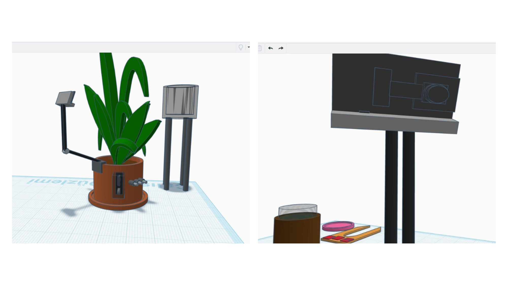
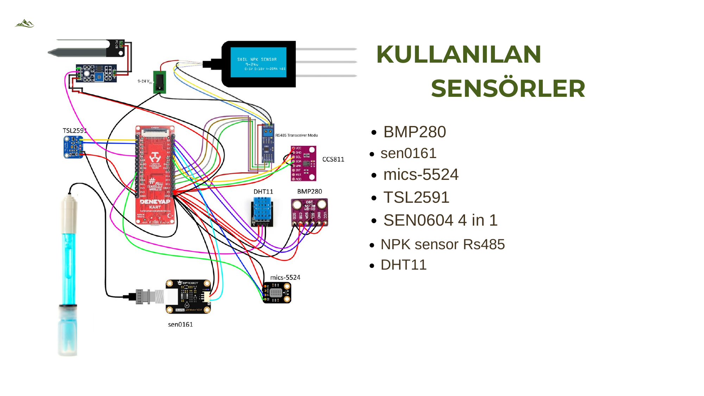
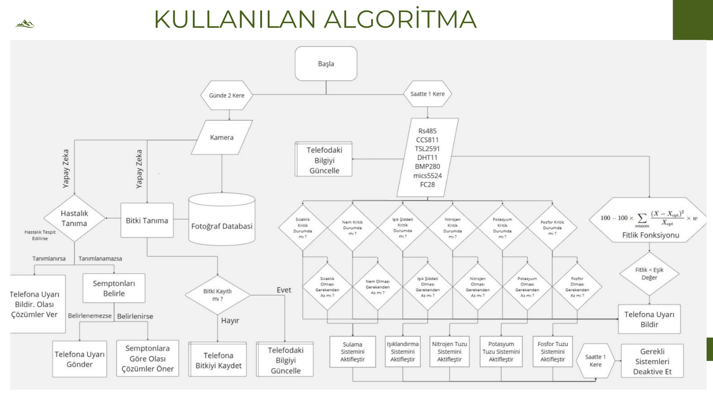
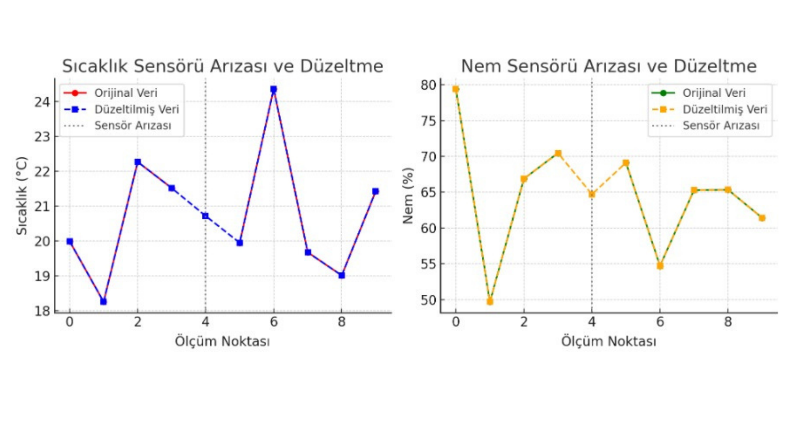
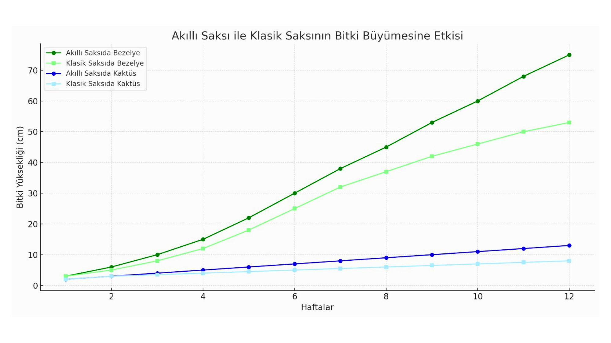
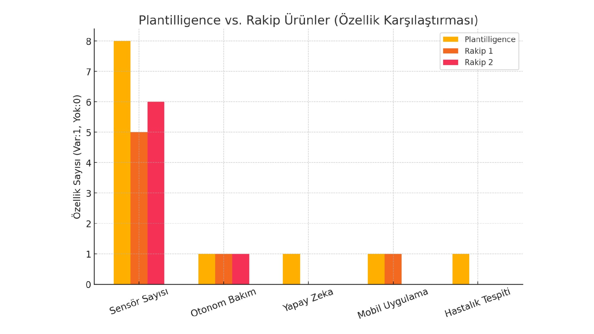
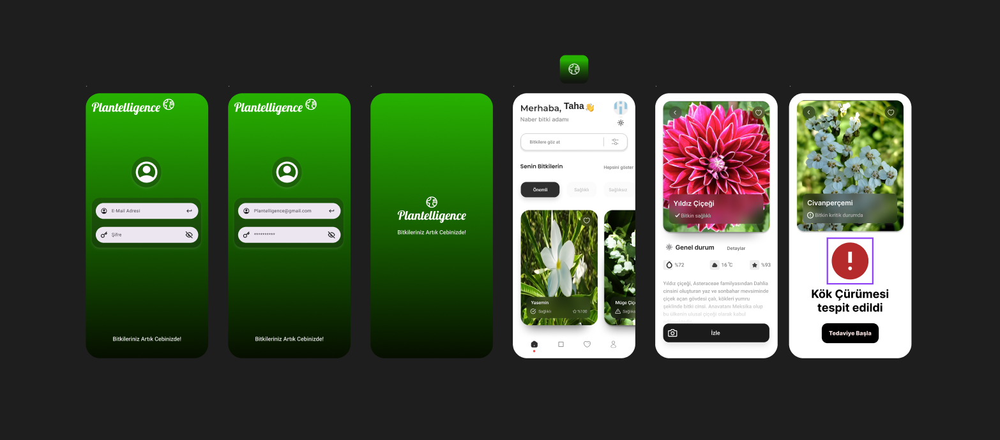

Plantelligence; Deneyap Kart, ESP32-CAM, RS485 NPK sensörü ve 3 tüplü otonom gübreleme (Azot, Fosfor, Potasyum) ünitesiyle çalışan akıllı saksı ve sera otomasyon sistemidir. Hastalıkları henüz yaprakta belirmeden saptar, bitkiyi 7/24 görsel olarak izler ve ihtiyaç duyduğu besini mililitrik olarak toprağa iletir.
Daha Hızlı Büyüme
Endüstriyel Sensör
NPK Dozajlama
ESP32-CAM Canlı Akış

Endüstriyel seracılık ve modern tarım işletmelerinde karşılaşılan kaynak israfını, ithal donanım bağımlılığını ve yüksek iş gücü maliyetlerini yerli mühendislikle çözüyoruz.
| Kriter | Ağırlık | Plantelligence Projesindeki Somut Çıktı ve Karşılık |
|---|---|---|
| 1. Araştırma Önerisinin Bilimsel Niteliği | %35 | 8 farklı fiziksel/kimyasal parametrenin sensör füzyonu, TinyML yaprak sınıflandırma modeli ve matematiksel katsayılara dayalı özgün Fitlik Fonksiyonu. |
| 2. Yöntem ve Uygulama | %25 | Çift çevrimli otonom mimari (günde 2 kez yaprak analizi, saatte 1 kez telemetri & NPK dozaj döngüsü) ve sensör arıza tolerans algoritması. |
| 3. Proje Yönetimi | %20 | 8 aşamalı iş paketi planı (İP-01'den İP-08'e), sensör kirlenmesi ve pompa tıkanmasına karşı risk yönetim senaryoları. |
| 4. Sanayi Odaklı Çıktılar ve Yaygın Etki | %20 | Endüstriyel sera entegrasyonu (RS485 Modbus), %35 gübre tasarrufu, yerli Deneyap Kart ile ithalata bağımlılığın azaltılması, 3D baskıya ve seri üretime hazır CAD (.STL) kalıp modeli. |
Sunumda tanımlanan Fitlik Fonksiyonu formülü ve 3 tüp NPK dozajlama sistemiyle birebir uyumlu çalışan interaktif test laboratuvarı.
Sunumdaki algoritma akışına göre bitki fotoğrafı veri tabanından taranır, semptomlar belirlenip olası tedavi başlatılır.
Aşırı nem ve toprak kök havalandırması yetersizliği saptandı. Otonom sulama durduruldu, fosfor tuzu desteği ve kuruma periyodu önerildi.
Tinkercad / SolidWorks ortamında tasarlanan ve 3D yazıcı üretimine hazır akıllı saksı CAD modeli, kamera yuvası ve NPK dozajlama mimarisi.
Bitkiyi 7/24 odak noktasında tutan ayarlanabilir ESP32-CAM kamera kolu, yan gövdeye entegre 3 tüplü NPK besin enjeksiyon kanalları ve alt su tahliye haznesi.

MAX485 ile RS485 NPK sensörü, DFRobot SEN0161 analog pH probu, I2C üzerinden TSL2591, BMP280, CCS811 ve tek hatlı DHT11 / FC-28 toprak nemi entegrasyonu.
Günde 2 kere görsel yapay zeka hastalık analizi, saatte 1 kere Fitlik Fonksiyonu ile otonom sulama ve gübreleme döngüsü.

Projede her sensör değeri için optimum büyüme noktası ($X_{opt}$) ve ağırlık katsayısı ($w$) belirlenmiştir:

Sensörlerde anlık parazit, kopukluk veya uç değer sıçraması meydana geldiğinde sistem bunu algılar; geçmiş trend interpolasyonu ile düzeltilmiş veriyi kural motoruna iletir.
Akıllı saksı ve klasik saksı kontrol grupları arasında yürütülen 12 haftalık kontrollü deney sonuçları.


Piyasadaki akıllı saksılardan farklı olarak; 8 parametreli sensör ağı, 7/24 kamera, NPK besin dozajlama ve yapay zeka hastalık teşhisi yeteneklerini tek gövdede birleştiren tek yerli platformdur.
"Bitkileriniz Artık Cebinizde!" — Anlık bildirimler, canlı kamera akışı ve tek tıkla tedavi protokolleri.

TÜBİTAK araştırma önerisinde taahhüt edilen ve başarıyla icra edilen 8 aşamalı proje takvimi.
Proje amacı, hedefler ve yöntemlerin belirlenmesi.
Sensör matrisi ve gömülü yazılım altyapısının seçimi.
3D CAD akıllı saksı tasarımı ve sensör prototipi.
Yapay zeka hastalık sınıflandırma ve telemetri motoru.
Mobil arayüz tasarımı ve veri entegrasyonu.
12 haftalık büyüme deneyleri ve hata ayıklama.
Son prototipin tamamlanması ve sistemlerin gözden geçirilmesi.
TÜBİTAK proje raporunun hazırlanması ve sunumun tamamlanması.
Plantelligence projesinin donanım mimarisi, gömülü yazılımı, yapay zeka modelleri ve mekanik tasarımını hayata geçiren proje yürütücüsü.
Manisa Celal Bayar Üniversitesi Mekatronik Mühendisliği öğrencisi. C/C++, Python, Deneyap Kart, mikrokontrolör programlama, sensör füzyonu, yapay zeka tabanlı görüntü işleme ve açık kaynak Linux sistem geliştirme konularında çalışmalarını sürdürmektedir. Plantelligence projesinin 3D CAD tasarımı, elektronik devre dizilimi, Fitlik Fonksiyonu algoritması ve tüm web/mobil telemetri entegrasyonunu tek başına yürütmüştür.